Web Server Statistics for ke.cloudwage.com
Web Server Statistics for ke.cloudwage.com
Program started on Sun, May 19 2019 at 2:12 PM.
Analyzed requests from Tue, May 14 2019 at 10:03 AM to Sun, May 19 2019 at 12:33 PM (5.10 days).
Web Server Statistics for ke.cloudwage.comProgram started on Sun, May 19 2019 at 2:12 PM.
Analyzed requests from Tue, May 14 2019 at 10:03 AM to Sun, May 19 2019 at 12:33 PM (5.10 days).
(Go To: Top | General Summary | Monthly Report | Daily Summary | Hourly Summary | Domain Report | Organization Report | Redirected Referrer Report | Failed Referrer Report | Referring Site Report | Browser Report | Browser Summary | Operating System Report | Status Code Report | File Size Report | File Type Report | Directory Report | Request Report)
Successful requests: 3,443
Average successful requests per day: 674
Successful requests for pages: 94
Average successful requests for pages per day: 18
Failed requests: 8
Redirected requests: 27
Distinct files requested: 921
Distinct hosts served: 14
Data transferred: 845.00 megabytes
Average data transferred per day: 165.55 megabytes
(Go To: Top | General Summary | Monthly Report | Daily Summary | Hourly Summary | Domain Report | Organization Report | Redirected Referrer Report | Failed Referrer Report | Referring Site Report | Browser Report | Browser Summary | Operating System Report | Status Code Report | File Size Report | File Type Report | Directory Report | Request Report)
Each unit ( ) represents 3 requests for pages or part thereof.
) represents 3 requests for pages or part thereof.
| month | #reqs | #pages | |
|---|---|---|---|
| May 2019 | 3443 | 94 |  |
Busiest month: May 2019 (94 requests for pages).
(Go To: Top | General Summary | Monthly Report | Daily Summary | Hourly Summary | Domain Report | Organization Report | Redirected Referrer Report | Failed Referrer Report | Referring Site Report | Browser Report | Browser Summary | Operating System Report | Status Code Report | File Size Report | File Type Report | Directory Report | Request Report)
Each unit () represents 1 request for a page.
| day | #reqs | #pages | |
|---|---|---|---|
| Sun | 86 | 22 |    |
| Mon | 0 | 0 | |
| Tue | 640 | 33 | |
| Wed | 269 | 7 | |
| Thu | 2363 | 24 |  |
| Fri | 78 | 8 | |
| Sat | 7 | 0 |
(Go To: Top | General Summary | Monthly Report | Daily Summary | Hourly Summary | Domain Report | Organization Report | Redirected Referrer Report | Failed Referrer Report | Referring Site Report | Browser Report | Browser Summary | Operating System Report | Status Code Report | File Size Report | File Type Report | Directory Report | Request Report)
Each unit () represents 2 requests for pages or part thereof.
| hour | #reqs | #pages | |
|---|---|---|---|
| 0 | 0 | 0 | |
| 1 | 0 | 0 | |
| 2 | 0 | 0 | |
| 3 | 0 | 0 | |
| 4 | 0 | 0 | |
| 5 | 0 | 0 | |
| 6 | 0 | 0 | |
| 7 | 0 | 0 | |
| 8 | 0 | 0 | |
| 9 | 25 | 1 | |
| 10 | 580 | 46 | |
| 11 | 343 | 15 | |
| 12 | 620 | 16 | |
| 13 | 1287 | 6 | |
| 14 | 114 | 2 | |
| 15 | 467 | 8 | |
| 16 | 7 | 0 | |
| 17 | 0 | 0 | |
| 18 | 0 | 0 | |
| 19 | 0 | 0 | |
| 20 | 0 | 0 | |
| 21 | 0 | 0 | |
| 22 | 0 | 0 | |
| 23 | 0 | 0 |
(Go To: Top | General Summary | Monthly Report | Daily Summary | Hourly Summary | Domain Report | Organization Report | Redirected Referrer Report | Failed Referrer Report | Referring Site Report | Browser Report | Browser Summary | Operating System Report | Status Code Report | File Size Report | File Type Report | Directory Report | Request Report)
Listing domains, sorted by the amount of traffic.
| #reqs | %bytes | domain |
|---|---|---|
| 3443 | 100% | [unresolved numerical addresses] |
(Go To: Top | General Summary | Monthly Report | Daily Summary | Hourly Summary | Domain Report | Organization Report | Redirected Referrer Report | Failed Referrer Report | Referring Site Report | Browser Report | Browser Summary | Operating System Report | Status Code Report | File Size Report | File Type Report | Directory Report | Request Report)
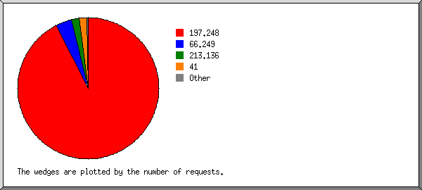
Listing organizations, sorted by the number of requests.
| #reqs | %bytes | organization |
|---|---|---|
| 3186 | 99.65% | 197.248 |
| 125 | 0.17% | 66.249 |
| 65 | 213.136 | |
| 61 | 0.14% | 41 |
| 6 | 0.05% | 62.8 |
(Go To: Top | General Summary | Monthly Report | Daily Summary | Hourly Summary | Domain Report | Organization Report | Redirected Referrer Report | Failed Referrer Report | Referring Site Report | Browser Report | Browser Summary | Operating System Report | Status Code Report | File Size Report | File Type Report | Directory Report | Request Report)
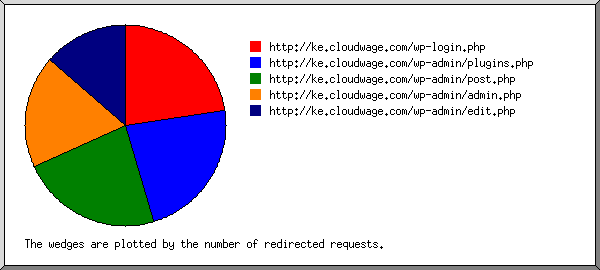
Listing referring URLs, sorted by the number of redirected requests.
(Go To: Top | General Summary | Monthly Report | Daily Summary | Hourly Summary | Domain Report | Organization Report | Redirected Referrer Report | Failed Referrer Report | Referring Site Report | Browser Report | Browser Summary | Operating System Report | Status Code Report | File Size Report | File Type Report | Directory Report | Request Report)
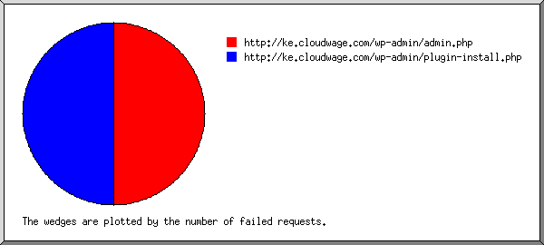
Listing referring URLs, sorted by the number of failed requests.
| #reqs | URL |
|---|---|
| 1 | http://ke.cloudwage.com/wp-admin/admin.php |
| 1 | http://ke.cloudwage.com/wp-admin/plugin-install.php |
(Go To: Top | General Summary | Monthly Report | Daily Summary | Hourly Summary | Domain Report | Organization Report | Redirected Referrer Report | Failed Referrer Report | Referring Site Report | Browser Report | Browser Summary | Operating System Report | Status Code Report | File Size Report | File Type Report | Directory Report | Request Report)
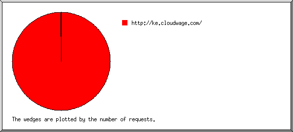
Listing referring sites, sorted by the number of requests.
| #reqs | site |
|---|---|
| 3296 | http://ke.cloudwage.com/ |
| 2 | http://ke.wizag.biz/ |
(Go To: Top | General Summary | Monthly Report | Daily Summary | Hourly Summary | Domain Report | Organization Report | Redirected Referrer Report | Failed Referrer Report | Referring Site Report | Browser Report | Browser Summary | Operating System Report | Status Code Report | File Size Report | File Type Report | Directory Report | Request Report)
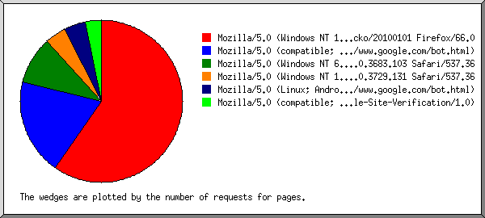
Listing browsers with at least 1 request for a page, sorted by the number of requests for pages.
| #reqs | #pages | browser |
|---|---|---|
| 3082 | 56 | Mozilla/5.0 (Windows NT 10.0; Win64; x64; rv:66.0) Gecko/20100101 Firefox/66.0 |
| 41 | 18 | Mozilla/5.0 (compatible; Googlebot/2.1; +http://www.google.com/bot.html) |
| 61 | 9 | Mozilla/5.0 (Windows NT 6.1) AppleWebKit/537.36 (KHTML, like Gecko) Chrome/73.0.3683.103 Safari/537.36 |
| 103 | 4 | Mozilla/5.0 (Windows NT 10.0; Win64; x64) AppleWebKit/537.36 (KHTML, like Gecko) Chrome/74.0.3729.131 Safari/537.36 |
| 4 | 4 | Mozilla/5.0 (Linux; Android 6.0.1; Nexus 5X Build/MMB29P) AppleWebKit/537.36 (KHTML, like Gecko) Chrome/41.0.2272.96 Mobile Safari/537.36 (compatible; Googlebot/2.1; +http://www.google.com/bot.html) |
| 3 | 3 | Mozilla/5.0 (compatible; Google-Site-Verification/1.0) |
| 149 | 0 | [not listed: 9 browsers] |
(Go To: Top | General Summary | Monthly Report | Daily Summary | Hourly Summary | Domain Report | Organization Report | Redirected Referrer Report | Failed Referrer Report | Referring Site Report | Browser Report | Browser Summary | Operating System Report | Status Code Report | File Size Report | File Type Report | Directory Report | Request Report)
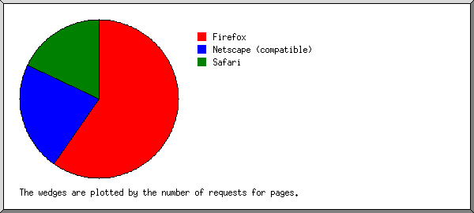
Listing browsers with at least 1 request for a page, sorted by the number of requests for pages.
| # | #reqs | #pages | browser |
|---|---|---|---|
| 1 | 3082 | 56 | Firefox |
| 3082 | 56 | Firefox/66 | |
| 2 | 44 | 21 | Netscape (compatible) |
| 3 | 249 | 17 | Safari |
| 247 | 17 | Safari/537 | |
| 68 | 0 | [not listed: 3 browsers] |
(Go To: Top | General Summary | Monthly Report | Daily Summary | Hourly Summary | Domain Report | Organization Report | Redirected Referrer Report | Failed Referrer Report | Referring Site Report | Browser Report | Browser Summary | Operating System Report | Status Code Report | File Size Report | File Type Report | Directory Report | Request Report)
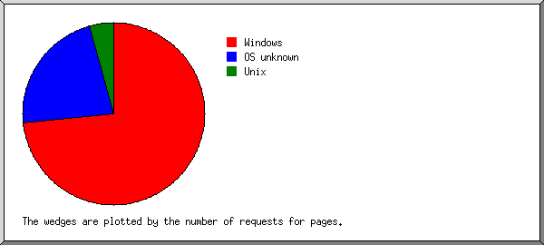
Listing operating systems, sorted by the number of requests for pages.
| # | #reqs | #pages | OS |
|---|---|---|---|
| 1 | 3249 | 69 | Windows |
| 3186 | 60 | Windows NT | |
| 63 | 9 | Unknown Windows | |
| 2 | 185 | 21 | OS unknown |
| 3 | 7 | 4 | Unix |
| 7 | 4 | Linux | |
| 4 | 2 | 0 | Macintosh |
(Go To: Top | General Summary | Monthly Report | Daily Summary | Hourly Summary | Domain Report | Organization Report | Redirected Referrer Report | Failed Referrer Report | Referring Site Report | Browser Report | Browser Summary | Operating System Report | Status Code Report | File Size Report | File Type Report | Directory Report | Request Report)
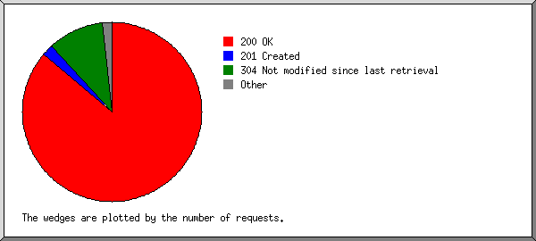
Listing status codes, sorted numerically.
| #reqs | status code |
|---|---|
| 2997 | 200 OK |
| 69 | 201 Created |
| 24 | 206 Partial content |
| 2 | 301 Document moved permanently |
| 25 | 302 Document found elsewhere |
| 353 | 304 Not modified since last retrieval |
| 4 | 404 Document not found |
| 4 | 500 Internal server error |
(Go To: Top | General Summary | Monthly Report | Daily Summary | Hourly Summary | Domain Report | Organization Report | Redirected Referrer Report | Failed Referrer Report | Referring Site Report | Browser Report | Browser Summary | Operating System Report | Status Code Report | File Size Report | File Type Report | Directory Report | Request Report)
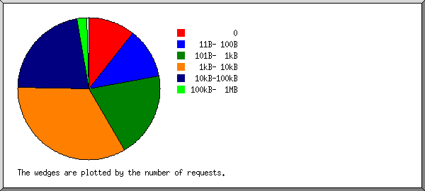
| size | #reqs | %bytes |
|---|---|---|
| 0 | 370 | |
| 1B- 10B | 0 | |
| 11B- 100B | 396 | |
| 101B- 1kB | 663 | 0.04% |
| 1kB- 10kB | 1161 | 0.60% |
| 10kB-100kB | 761 | 2.85% |
| 100kB- 1MB | 78 | 1.78% |
| 1MB- 10MB | 5 | 1.88% |
| 10MB-100MB | 6 | 30.66% |
| 100MB- 1GB | 3 | 62.20% |
(Go To: Top | General Summary | Monthly Report | Daily Summary | Hourly Summary | Domain Report | Organization Report | Redirected Referrer Report | Failed Referrer Report | Referring Site Report | Browser Report | Browser Summary | Operating System Report | Status Code Report | File Size Report | File Type Report | Directory Report | Request Report)
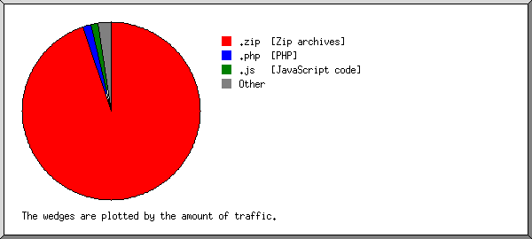
Listing extensions with at least 0.1% of the traffic, sorted by the amount of traffic.
| #reqs | %bytes | extension |
|---|---|---|
| 25 | 94.93% | .zip [Zip archives] |
| 552 | 1.41% | .php [PHP] |
| 892 | 1.34% | .js [JavaScript code] |
| 418 | 0.78% | .jpg [JPEG graphics] |
| 571 | 0.61% | .png [PNG graphics] |
| 451 | 0.25% | .css [Cascading Style Sheets] |
| 94 | 0.24% | [directories] |
| 31 | 0.23% | .woff2 |
| 25 | 0.10% | .woff |
| 384 | 0.10% | [not listed: 8 extensions] |
(Go To: Top | General Summary | Monthly Report | Daily Summary | Hourly Summary | Domain Report | Organization Report | Redirected Referrer Report | Failed Referrer Report | Referring Site Report | Browser Report | Browser Summary | Operating System Report | Status Code Report | File Size Report | File Type Report | Directory Report | Request Report)
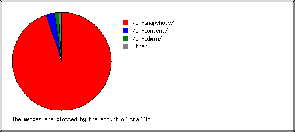
Listing directories with at least 0.01% of the traffic, sorted by the amount of traffic.
| #reqs | %bytes | directory |
|---|---|---|
| 25 | 94.93% | /wp-snapshots/ |
| 1826 | 2.81% | /wp-content/ |
| 552 | 1.37% | /wp-admin/ |
| 589 | 0.55% | /wp-includes/ |
| 151 | 0.21% | [root directory] |
| 17 | 0.11% | /dup-installer/ |
| 263 | 0.01% | /wp-json/ |
| 20 | 0.02% | [not listed: 8 directories] |
(Go To: Top | General Summary | Monthly Report | Daily Summary | Hourly Summary | Domain Report | Organization Report | Redirected Referrer Report | Failed Referrer Report | Referring Site Report | Browser Report | Browser Summary | Operating System Report | Status Code Report | File Size Report | File Type Report | Directory Report | Request Report)
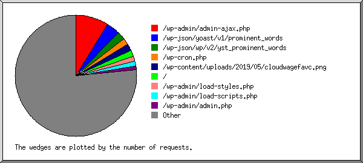
Listing files with at least 20 requests, sorted by the number of requests.
| #reqs | %bytes | last time | file |
|---|---|---|---|
| 306 | 0.07% | May/16/19 3:23 PM | /wp-admin/admin-ajax.php |
| 123 | May/16/19 3:12 PM | /wp-json/yoast/v1/prominent_words | |
| 73 | 0.01% | May/16/19 3:09 PM | /wp-json/wp/v2/yst_prominent_words |
| 65 | May/19/19 12:33 PM | /wp-cron.php | |
| 61 | 0.02% | May/17/19 12:22 PM | /wp-content/uploads/2019/05/cloudwagefavc.png |
| 55 | 0.20% | May/19/19 12:33 PM | / |
| 48 | 0.45% | May/16/19 3:11 PM | /wp-admin/load-styles.php |
| 27 | 0.26% | May/16/19 3:10 PM | /wp-admin/load-styles.php?c=0&dir=ltr&load[]=dashicons,wp-jquery-ui-dialog,admin-bar,common,forms,admin-menu,dashboard,list-tables,edit,revisions,media,themes,about,nav-menu&load[]=s,wp-pointer,widgets,site-icon,l10n,buttons,wp-auth-check,wp-color-picker&ver=5.2 |
| 42 | 0.32% | May/16/19 3:11 PM | /wp-admin/load-scripts.php |
| 36 | 0.11% | May/16/19 3:11 PM | /wp-admin/admin.php |
| 26 | May/16/19 3:10 PM | /wp-content/plugins/duplicator/assets/css/global_admin_style.css | |
| 26 | May/16/19 3:10 PM | /wp-content/plugins/duplicator/assets/css/global_admin_style.css?ver=1.3.12 | |
| 25 | 0.21% | May/18/19 4:41 PM | /wp-content/uploads/2017/05/blog-bg.jpg |
| 25 | 94.93% | May/16/19 1:47 PM | /wp-snapshots/20190514_Cloudwage2_a209774ac86f13227894_20190516114356_archive.zip |
| 24 | May/16/19 3:11 PM | /wp-content/plugins/goodlayers-core/framework/images/admin-option-icon.png | |
| 24 | 0.01% | May/16/19 3:11 PM | /wp-content/plugins/wp-google-map-plugin/assets/images/flippercode.png |
| 22 | 0.04% | May/16/19 3:12 PM | /wp-includes/js/thickbox/loadingAnimation.gif |
| 21 | May/16/19 3:10 PM | /wp-content/plugins/revslider/admin/assets/css/global.css | |
| 21 | May/16/19 3:10 PM | /wp-content/plugins/revslider/admin/assets/css/global.css?ver=5.4.8 | |
| 2467 | 3.63% | May/19/19 11:55 AM | [not listed: 682 files] |